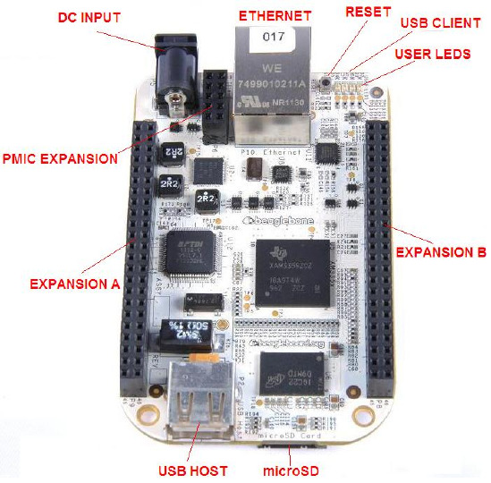

BeagleBone

The BeagleBone
This directory contains the port of NuttX to the original (white) BeagleBone. See https://www.beagleboard.org/boards/beaglebone-original for more information. This board is based around the TI AM335x Sitara Cortex-A8 CPU.
ITEMS |
DETAILS |
|---|---|
CPU |
720MHz ARM Cortex-A8 |
FPU |
NEON SIMD Coprocessor |
I-Cache |
32KB |
D-Cache |
32KB |
L2 Cache |
256KB L2 Cache with ECC |
DRAM |
256MB DDR2 |
On-Chip SRAM |
64KB |
Dedicated SRAM |
64KB |
On-Chip Boot ROM |
176KB |
Onboard Storage |
microSD card (TF) slot |
Extension Interface |
2.54mm Headers, 92 pins |
Network interface |
10/100Mbps RJ45 |
Power |
5V, 1000mA |
Peripheral Support
The following list indicates the state of peripherals’ support in NuttX:
Peripheral |
Support |
NOTES |
|---|---|---|
ADC |
No |
|
Ethernet |
No |
|
CAN |
No |
|
DMA |
No |
|
GPIO |
Yes |
|
I2C |
Yes |
|
I2S |
No |
|
LED |
Yes |
|
SD |
No |
|
SPI |
No |
|
Timers |
Yes |
|
UART |
Yes |
|
USB Client |
No |
|
USB Host |
No |
|
Watchdog |
Yes |
Serial Console
By default, the serial console will be provided on UART0 in all of these configurations.
UART0 is available on the USB client port.
Booting NuttX from a microSD card
It is assumed that the microSD already boots to the U-Boot prompt.
These are the steps to run nuttx.bin from the microSD Card:
Configure and build the NuttX BeagleBone configuration. You should have a file called nuttx.bin when the build completes.
Insert a microSD into the host PC.
Copy nuttx.bin into the microSD.
Remove the microSD from the host PC and insert into the BeagleBone microSD slot.
Connect a Mini-USB cable to the BeagleBone and open a serial terminal on the host PC to communicate with the target.
Reset and stop the BeagleBone boot. You should see output from U-boot in the serial console.
Load NuttX into memory from the U-Boot prompt and run NuttX as shown below.
=> load mmc 0 0x80300000 nuttx.bin
414356 bytes read in 37 ms (10.7 MiB/s)
=> go 0x80300000
## Starting application at 0x80300000 ...
NuttShell (NSH) NuttX-13.0.1-RC0
nsh>
Configurations
Information Common to All Configurations
Each BeagleBone configuration is maintained in a sub-directory and can be selected as follow:
tools/configure.sh [OPTIONS] beaglebone:<subdir>
Where [OPTIONS] include -l to configure for a Linux host platform. -h will give you the list of all options.
Before building, make sure the PATH environment variable includes the correct path to the directory that holds your toolchain binaries.
Build NuttX by typing the following:
make
At the conclusion of the make, the nuttx binary will reside in an ELF file called nuttx.
The <subdir> that is provided above as an argument to the tools/configure.sh
must be one of the following.
Configuration Sub-directories
nsh
This configuration directory provides the NuttShell (NSH).
knsh
This is the kernel build configuration. User applications are included in the final nuttx.bin image.
Steps to build the kernel image with userspace apps in ROMFS:
./tools/configure.sh -l beaglebone/knsh
make && make export
pushd ../apps
tools/mkimport.sh -z -x ../nuttx/nuttx-export-*.tar.gz
make import
cp -a bin /tmp
tools/mkromfsimg.sh
mv boot_romfsimg.h ../nuttx/boards/arm/am335x/beaglebone/include/bin_romfsimg.h
popd
make clean clean_context
make
Run the nuttx.bin as previously described.
=> load mmc 0 0x80300000 knsh.bin
414356 bytes read in 41 ms (9.6 MiB/s)
=> go 0x80300000
## Starting application at 0x80300000 ...
NuttShell (NSH) NuttX-13.0.1-RC0
knsh> uname -a
NuttX 13.0.1-RC0 3b7e453012-dirty Aug 17 2026 20:07:55 arm beaglebone
knsh> ls /bin
/bin:
dd
getprime
hello
init
sh
knsh> /bin/hello
Hello, World!!
knsh>